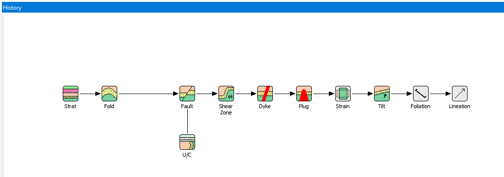

Geological modelling
There are several basic elements in each of the event definition windows, and the behaviour of these elements is common to all of the appropriate deformation events.
The first event in a structural history must always be the Base Stratigraphy Event. There is currently no extra signficance to placing some icons in a column rather than as a horizontal sequence.
The time sequence of icons in the history window is top to bottom then left to right.

In this section
Base stratigraphyFoldFaultUnconformityShear zoneDykePlugStrainTiltFoliationLineationImport blockStop signRandom historiesParameter groupsEvent previewsProfile windowsAlteration zonesRock propertiesColour definition
Noddy · open source under the MIT licence · Loop3D/noddy_qt